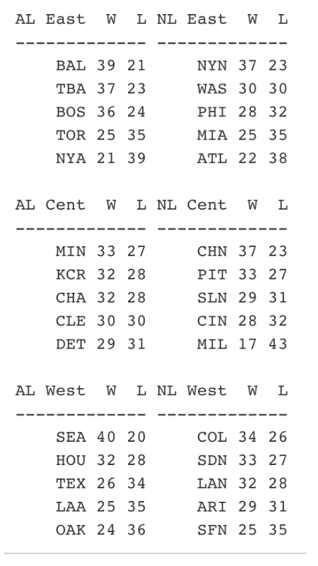

Simulation in Baseball
1 Introduction
This is a collection of blog posts from Exploring Baseball Data with R on the use of simulation methodology in baseball.
Section 2 describes the simulation of a half-inning of a baseball game. The simulation is based on a relatively simple multinomial model but it does a reasonable job in estimating the number of runs scored in a half-inning. Section 3 applies this simulation model to measure the ability of a team to cluster their on-base events in scoring runs. Section 4 illustrates the use of this same method to explore if David Ortiz was indeed a clutch hitter.
Section 5 focuses on the use of simulation to simulate game outcomes in a season. I apply a Bradley-Terry model where the team abilities follow a normal model. This simulation illustrates that you don’t really learn about team abilities based on results from a 60-game season.
Section 6 describes the use of a “model/data simulation” to illustrate Bayesian inference. By simulating parameters and statistics, one can learn about the parameter location (the posterior) based on a given value of the statistic.
Section 7 describes the use of a simulation-based permutation test to understand the consistency pattern of his pattern of hits/outs, home runs/not home runs, and strikeouts/not strikeouts.
2 Simulating a Half-Inning of Baseball
I am working on a method for determining the efficiency of a team in using its on-base events to score runs. Some baseball teams tend to scatter their on-base events through the nine innings and score few runs. (I am thinking of the 2016 Phillies, but maybe their problem is simply not producing many on-base events.) In contrast, other teams seem to be effective in bunching their on-base events to produce runs. In working on this method, I wanted to write a function to simulate the number of runs scored in a half inning given the overall probabilities of the six basic events OUT, SINGLE, DOUBLE, TRIPLE, HOME RUN, and WALK/HBP, and some basic runner advancement rules. Anyway, I thought it was a good topic for a post.
2.1 Runner Movements
In my simulation, I wanted to use realistic movements of runners on base on base hits. For example, if there is a runner on first, then sometimes a single will advance runners to first and second, and sometimes you’ll have runners on first and third. Using the 2015 Retrosheet data, I found the frequencies of the different outcomes which can be converted to probabilities. For example, when there is a runner on 1st, a single advanced the runner to 2nd 3940 times, and advanced the runner to 3rd 1411, so the probabilities of the final states “runners on 1st and 2nd” and “runners on 1st and third” are approximated to be 3940 / (3940 + 1411) = 0.736 and 1411 / (3940 + 1411) = 0.264. In a similar fashion, I found the runner advancement probabilities for singles and doubles in all runner situations. Here is the runner advancement matrix for a single. (My notation is that “110” means runners on first and second.)
000 100 010 001 110 101 011 111
000 0 1.000 0 0 0.000 0.000 0 0.000
100 0 0.000 0 0 0.736 0.264 0 0.000
010 0 0.576 0 0 0.000 0.424 0 0.000
001 0 1.000 0 0 0.000 0.000 0 0.000
110 0 0.000 0 0 0.359 0.239 0 0.401
101 0 0.000 0 0 0.766 0.234 0 0.000
011 0 0.518 0 0 0.000 0.482 0 0.000
111 0 0.000 0 0 0.344 0.223 0 0.4332.2 The Probabilities of the Six Basic Events
Also to make my simulation more realistic, I used the frequencies of the six basic events from 2015 data.
OUT BB 1B 2B 3B HR
0.6817 0.0863 0.1543 0.0454 0.0052 0.0270Note that I’m ignoring other events such as steals, sacrifices, wild pitches and passed balls that help to produce runs, but I’m interested in how well I can estimating run scoring just using this information.
2.3 The Simulation Function
On my gist site, I have two functions – the function runs_setup() defines the runner advancement matrices and a vector that gives the probabilities of the six basic events, and the function simulate_half_inning() does the actual simulation. Here’s the crux of the actual simulation. Using the sample() function, I simulate an event. I simulate the runner advancement – sometimes, the advancement is deterministic (for example, the bases will always be “001” after a triple), but otherwise I simulate the runner advancement using the Prob_Single and Prob_Double matrices. I update the number of outs and runs scored, and then repeat until we have three outs.
while(outs < 3){
event <- sample(names(setup$prob), size=1, prob=setup$prob)
if (event=="1B") new_bases <- sample(all_bases, 1,
prob=setup$Prob_Single[bases, ])
if (event=="2B") new_bases <- sample(all_bases, 1,
prob=setup$Prob_Double[bases, ])
if (event=="BB") new_bases <- sample(all_bases, 1,
prob=setup$Prob_Walk[bases, ])
if (event=="3B") new_bases <- "001"
if (event=="HR") new_bases <- "000"
if (event=="OUT") new_bases <- bases
outs <- outs + (event == "OUT")
runs <- runs - (event == "OUT") +
runs.transition(bases, new_bases)
bases <- new_bases
}2.4 How Do the Simulation Results Compare with Real Baseball?
I use the runs_setup() function to do the setup, and the replicate() function together with simulate_half_inning() to simulate the runs scored for 10,000 half-innings:
st <- runs_setup()
R <- replicate(10000, simulate_half_inning(st))
round(prop.table(table(R)), 3)
sim.R
0 1 2 3 4 5 6 7 8 10 12
0.762 0.123 0.060 0.033 0.014 0.005 0.002 0.001 0.000 0.000 0.000In these simulations, there were 0 runs scored in 76.2% of the half-innings, 1 run scored in 12.3% of the half-innings, and so on.
I’m interested in how the simulated results compare to the real run production during the 2015 season. I’ve graphed the proportions of 0, 1, 2, … runs scored (in a half-inning) using the simulated and actual data. Actually, I have plotted the logit probability which is log (prob / (1 - prob)) – this makes it easier to visualize small probabilities.
Looking at the graph, it seems that the simple model predicted a higher proportion of 0-run innings and predicted a lower proportion of 1-run innings. That makes sense, since the model is ignoring events like stolen bases and sacrifice runs that produce a single run. It is interesting that the model seems good in predicting the proportion of runs scored for 2 runs and higher.
In my work, one common theme is that simple models tend to be remarkably accurate in predicting the variability in baseball data. This simulation model is certainly wrong (for example, I was ignoring the variability in run scoring between teams), but the model seems useful in understanding the variation in run scoring.
3 Measuring Cluster Luck in Scoring
In the last post, I devised a simple model for run scoring in a half-inning. Based on the probabilities of the different PA events and runner advancement probabilities, I wrote a function to simulate the number of runs scored, and the patterns using this model seem to resemble real run scoring in baseball.
I want to use my work to address the following problem. Suppose a team scores 10 runs in a game. I would like to measure the so called “cluster luck” of this run scoring. That is, how many of these 10 runs are attributed to the fact that the team was able to cluster their on-base events? (By the way, this problem has been addressed in other ways – in particular, this post uses a measure which compares the actual runs scored with a runs-created formula.)
Here is my approach. As an example, let’s look at the June 12, 2015 game between the Red Sox and the Blue Jays where the Red Sox scored 10 runs. Using Retrosheet play-by-play data, it was straightforward to extract all of the outcomes (in sequence) of the PA’s during this game.
[1] "OUT" "BB" "2B" "1B" "OUT" "HR" "HR" "1B" "1B" "BB" "OUT"
[12] "OUT" "1B" "OUT" "OUT" "OUT" "1B" "BB" "HR" "OUT" "OUT" "OUT"
[23] "OUT" "OUT" "OUT" "OUT" "1B" "OUT" "OUT" "OUT" "OUT" "OUT" "OUT"
[34] "OUT" "BB" "OUT" "OUT" "BB" "1B" "BB" "OUT" "OUT" "BB" "OUT"
[45] "2B" "OUT"If one tabulates these outcomes …
events
1B 2B BB HR OUT
7 2 7 3 27we see that the Red Sox had 12 hits (7 singles, two doubles, and 3 home runs), 7 walks, and 27 outs for the nine-innings they batted in this game. Looking at the line-score, it seems that the Red Sox’s scoring exhibited some clustering as they scored 8 of their 10 runs in the 1st and 3rd innings.
Suppose there is really no true clustering in the arrangement of the 46 PA outcomes above. That would suggest that all possible arrangements of these symbols is equally likely. (Actually, not all arrangements are possible since we know the last inning must end with an OUT.)
Here’s my method.
- Using the
sample()function in R, I randomly mix up these 46 symbols. Here is one of these random permutations:
[1] "BB" "OUT" "OUT" "1B" "HR" "OUT" "OUT" "OUT" "OUT" "1B" "OUT"
[12] "1B" "OUT" "OUT" "OUT" "1B" "HR" "OUT" "OUT" "OUT" "BB" "1B"
[23] "1B" "OUT" "2B" "1B" "OUT" "OUT" "HR" "OUT" "2B" "OUT" "BB"
[34] "OUT" "OUT" "BB" "OUT" "OUT" "OUT" "BB" "OUT" "OUT" "BB" "OUT"
[45] "BB" "OUT"Based on the outs, I can partition the mixed-up PA’s into nine innings.
Using my run-scoring algorithm (described in the last post) for each inning, I simulate the runs scored for this mixed-up game given this random arrangement of symbols. (I say “simulate”, since there is randomness in the runner advancement in my scoring algorithm.)
I repeat the last step a large number of times, obtaining a simulated distribution of runs scored in the game if there is no true clustering. This represents the game run scoring that one would predict if these 7 singles, 2 doubles, 7 walks, 3 home runs, and 27 outs just occurred in some random fashion during the game.
I compare the actual run scoring with this simulated distribution – if the actual runs scored is “large” relative to the simulated distribution, then that would indicate some “cluster luck”.
(There is a quibble here. Since my run scoring model ignores run-contributing events such as steals, sacrifices, and wild pitches, then it is seems only fair in my comparison to also apply the same run-scoring algorithm to the actual sequence of PA events. So in the graph below, the “simulated” histogram refers to the simulation assuming the “all possible arrangements are equally likely” model, and the “observed” histogram refers to model simulations based on the observed PA sequence.)
I show two histograms below for this particular Red Sox pattern of PA’s. The top one represents the runs scored using the actual sequence of PA outcomes, and the bottom histogram represents what one would predict using random arrangements of the PA symbols.
s
In this case, the results are a bit surprising. Using the actual PA sequence, the Red Sox would score 9-10 runs in this game – the number tends to understate the actual runs scored (10) a little since my run-scoring model ignores stealing, sacrifices, etc. In the random arrangement model, the Red Sox would also score, on average 9 runs, although the simulated runs scored between 5 and 13. For this particular game I would say that the cluster luck effect in run scoring is pretty small.
Although this work represents a first look at this run clustering issue, it looks promising. One should be able to use this method to compare teams in their abilities to cluster on-base events to score runs. Obviously this is an important issue for a baseball manager. For example, the Phillies manager currently plays with the batting order of his hitters. Using this method, can one offer some guidance on an optimal batting order to make most efficient use of the run clustering effect?
4 Measuring Situational Hitting
4.1 Situational Hitting
Last week, I gave a talk about situational effects in baseball and the most interesting or most talked about situation is “clutch”. That is, does a player have the ability to perform better in clutch situations in baseball? I’m not as interested in the answer as I am in the methods that one might use to explore this question.
Anyway, Nate Silver in his baseball analysis days wrote an interesting article in the Baseball Behind the Numbers book that was reprinted in ESPN that explored this issue, focusing on David Ortiz’s 2005 season where he had a number of clutch performances. My intent here is to describe an alternative simulation-based method of detecting clutch ability, or as Nate would say “smart situational hitting.”
4.2 Assessing Situational Hitting by a Permutation Test
I illustrate this method for Ortiz’s 2005 season. In this particular season, Ortiz had 713 plate appearances. If we remove some situation-dependent events such as sacrifices, we have 708 plate appearances that consists of walks/hit-by-pitches, singles, doubles, triples, home runs, outs. These 708 PA’s happened during different runners on base and outs situations. The question is – is there a relationship between the PA outcomes and the game situations? That is, is there evidence that Ortiz was able to get his hits in situations that would produce more runs?
Here’s the setup to my method:
- First I created a spreadsheet listing all of the runner/outs situations (there are 24 of these) and all of the possible PA outcomes (the 6 listed above) – there are 144 = 24 times 6 rows in the table.
- For each situation (variable
STATE) andPAoutcome, I created a new situation variable (calledNEW.STATE) based on the outcome. I used simple runner advancement rules here where a single would advance all runners two bases and a double would advance runners three bases. I could be more accurate here using actual runner advancement distributions, but I don’t think these assumptions will have a big impact on the results. - Using the season’s run expectancy table, I found the runs expectancy before and the runs expectancy value after the PA and computed the runs value of the outcome using the usual “RUNS.VALUE = runs after - runs after + runs scored” recipe.Here is a snippet of this table – I add a runs value column to this table using the season runs expectancy matrix.
- Using this runs value table, I can compute the total runs value of Ortiz’s 708 PA’s in the 2005 season – I got a value of 68.86 runs. Remember this is not quite the actual runs created since I am ignoring the actual “after” situations and basing this calculation on my runner advancement model.
If the situation has nothing to do with the outcome, then the 708 factorial ways of permuting the outcome arrangements are all equally likely. This motivates the following simulation (essentially it is a so-called permutation test).
- Randomly mix up the sequence of 708 PA outcomes (using the R sample() function).
- Use the runner advancement model, compute the runs values of these 708 outcomes.
- Repeat this simulation 1000 iterations, collecting the (simulated) season run values.
4.3 What Do We Find?
Below I show a histogram of these simulated runs and show Ortiz’s value of 68.86 as a vertical line.

So Ortiz was clutch in the sense that he produced more runs than one would expect if the situations were independent of the outcomes. The right-tail probability (p-value) here is about 0.04 which indicates that he was “significantly” clutch for the 2005 season. Nate Silver also concluded that Ortiz was unusually clutch this season.
But the obvious follow-up question is “Was Ortiz consistently clutch in his career?” I went ahead and repeated this work for each of the seasons 2000 through 2016. For each season, I computed two numbers: \(R\), the actual number of runs Ortiz produced, and \(M\), the mean number of runs using the “situation is independent of outcome” model. Below I show the values of \(R\) in black and the values of \(M\) in red. Generally both the black points and red points show the same pattern, showing Ortiz’s great rise as a hitter up to the 2005 season.
The next graph focuses on the clutch issue by plotting \(R - M\) against season, where \(R - M\) is the number of additional runs Ortiz got by clever situational hitting.
We see that Ortiz was most clutch in 2005, getting 13 additional runs, but this was unusual. Note that the values of R - M fluctuate around zero indicating that there is little evidence that Ortiz was consistently clutch through his career.
4.4 Where to Go From Here?
By the way, last summer I talked about this same general approach in measuring “cluster luck” in scoring runs.
In his article, Nate Silver speculates that good “situational” hitters can adjust their hitting to the situation, namely the hitters with good bat control who rarely walk. (I don’t think David Ortiz fits in this category.) It would be interesting to do a study that more thoroughly explores this conjecture.
4.5 R Work?
I have a R markdown file that implements this permutation test procedure for David Ortiz and Derek Jeter. (Spoiler alert: There is little evidence that Jeter had clutch hitting ability using this method.) Here I’m using a single data frame that contains 17 seasons of Retrosheet play-by-play data.
5 Simulating a 60-Game Season
5.1 Introduction
This is one of my popular things to talk about – the nature of baseball competition. We’d like to think that the winner of the World Series is the “best team in baseball. But if you carefully think what this means, you’ll learn that the winner of the World Series is likely not the team with the most talent. Bill James talked about this topic at a meeting at my school in 1992 (here is a post with more detail) and I’ve written about this in different places.
Anyway, this topic is very relevant today since MLB is planning on a 60-game season for the 2020 season which is 63% shorter than the regular 162-game season. So that motivates this post where I speculate using a simulation what a 60-game regular season will look like. I apply a reasonable model called a Bradley-Terry random effects model for representing baseball competition. By running this simulation for 1000 seasons, we can learn about the association of a team’s ability with its performance and learn also how many games it will take for a team to make the playoffs.
5.2 A Model for Baseball Competition
The Bradley-Terry model provides a popular and helpful way of modeling team competition. Suppose the thirty MLB teams have unknown ability values, call them \(A_1, ..., A_{30}\), that are distributed according to a normal curve with mean 0 and standard deviation \(S\). If team C plays team D, then the probability that C defeats D is given by the probability
\[p_{CD} = \frac{\exp(A_C - A_D)}{1 + \exp(A_C - A_D)}\]
The only parameter unknown in this model is \(S\) which reflects the level of competition of the MLB teams. If the teams all have the same ability, then \(S\) would be equal to 0. We can actually fit this model and estimate the parameter \(S\) using game results data from a previous season. For the work here, I am going to assume that \(S\) = 0.3 which seems to reflect the level of MLB competition in recent seasons.
5.3 Simulating a Season
Using this Bradley Terry model, it is straightforward to use R to simulate a 2020 baseball season as follows.
First I simulate 30 random numbers from a normal distribution with mean 0 and standard deviation 0.3 – these numbers will represent the abilities of the 30 teams. Note that team names are matched at random to these abilities, but I suppose we could attach names in a less-random fashion based on current Vegas odds.
Then I simulate all of the game results in the MLB’s proposed 60-game schedule. Each team plays 10 games against each team in its own division (total of 40 games), and then 4 games against each team in the other league same division (total of 20 games).
Here’s the final standings for one of the simulated 60-game seasons (again you can ignore the team names since the teams are randomly assigned to the team strengths):

These are the type of W/L records that one might see in a 2020 season. Several teams like SEA and BAL in this particular simulation will win close to 40 games. A number of teams will hover between 28-32 wins (11 teams in this particular simulation) which will lead to some drama towards the end of the season fighting for the wild card berths. Look at the AL Central – all teams have between 29 and 33 wins – I suspect we’ll see a division like this in 2020.
5.4 Simulating Many Seasons
I wrote a R function one.simulation.20() that will simulate a single season of 60 games. The output of this function are the numbers of wins for each team, the division winners and the wild card teams for each league. In addition, we record the team talents (values of \(A_1, ..., A_{30}\)) that were used in this simulation.
We repeat this process for 1000 seasons, collecting all of the variables for all seasons. This repeated-season data is helpful for understanding the relationship between a team’s ability and its performance during a season. This simulation results will also help us understand how likely it is for teams of different abilities to get into the playoffs. Last, we’ll use the simulation to see many games a team needs to win to have a good chance of making the playoffs.
5.5 How Good Are the Playoff Teams?
Before the season begins, we know that a team’s ability is normally distributed with mean 0 and standard deviation 0.3. What have you learned about a team’s ability if they win their division? What have you learned about the team’s ability if they are one of the wild card teams? These questions are easy to answer from our simulation. We collect the talent values for all of the teams that win a division, and similarly collect the talent values for the wild card teams. Here I display density estimates of the talents for three groups – all teams, the wild-card teams and the division-winning teams.
Actually, this graph shows that you don’t really learn much about a team’s ability based on their performance in this 60-game season. Sure, a division-winner tends to have more talent than a wild-card team, but the difference between the “win division” density curve and the “wild card” density curve seems pretty small. Note also that it appears that below-average teams, that is teams with a negative talent value, are included in the teams making the playoffs.
5.6 What is the Chance that a Particular Team Ability Gets in the Playoffs?
Here we address a related question. Suppose you know a team’s talent value – what is the chance that the team with this talent will make the playoffs, either as a division-winner or a wild-card team? Here the outcome of a team’s performance is ordinal – either it doesn’t make the playoffs, it is a wild-card team, or it is a division-winner. Using an ordinal regression model, I estimate the probabilities of the three outcomes as a function of its talent using our simulated data. Below I show the estimated probability of (1) winning division, (2) wild-card, and (3) playoff (either winning division or wild card) as a function of the team talent.
x
Here are some interesting takeaways from this graph:
An average team, that is a team with a talent value of 0, has a 25% chance of making the playoffs.
The chance of being a wild card team is maximized for a team with talent value of 0.25.
A “top 10%” team has a talent value of 0.38. This team has approximately a 75% chance of making the playoffs.
5.7 How Many Games Should a Team Win?
Here is a question that many managers are currently thinking about. How many games do they have to win in a 60-game season to get into the playoffs? Again, this is easy to answer from our 1000 simulated seasons. We find the proportion of teams that (1) win their division, (2) are wild cards, and (3) make playoffs for each of the win totals of 25 through 45. Here’s the graph – some things we learn:
A team finishing with a 30-30 record only has about a 12% chance of making the playoffs.
But a 35-25 team will likely (with probability 86%) make the playoffs either as a division winner (43%) or a wild card (43%). In fact, the chance of being a wild card team is maximized by winning 35 games.
Winning a few more games beyond 35 really has a dramatic effect on the probability of making the playoffs – with 37 wins, the probability of making the playoffs is almost 100%
5.8 Wrap-Up
Again, if you want to read more about the Bradley-Terry model, look at my older post.
I could have improved the Bradley-Terry model by adding a term to account for home-advantage, but I don’t think that would have had much effect on the findings from the simulation.
I have written a Markdown file available on my Github Gist site that does all of this R work. This Markdown file includes the function
one.simulation.20()which implements one 2020 season simulation and the functionprint_standings()which displays the division standings of the simulated results as shown above. The simulation function is similar to the function described in detail in Chapter 9 of Analyzing Baseball with R – in that chapter, I was simulating the 1968 season.I have only talked about simulating the 2020 regular season. Another round of uncertainty is added with the baseball playoffs. All of these playoff series are relatively short (especially the game between the two wild card teams in each league) and so the outcomes are pretty unpredictable. I thought it would be best here to focus on the regular season since we’ve never seen a 60-game season in MLB baseball history.
6 Model/Data Simulations
6.1 Introduction
One of the innovative aspects of my Teaching Statistics Using Baseball text is its use of Bayesian thinking to introduce statistical inference. I thought it would be instructive to illustrate a simulation-based way of performing Bayesian inference for a hitting probability. I call this “model/data simulation” – I coauthored a paper in the American Statistician back in 2001 that describes this method in more detail.
6.2 The Algorithm
6.2.1 Construct a Prior
We are interested in learning about \(P\), the probability a particular batter gets a hit. Suppose we think that values of \(P\) of .15, .16, …, .39, .4 are all possible and our prior assigns each value the same probability. (The choice of uniform prior can be modified if one believes that particular values of \(P\) are more or less likely.)
6.2.2 Decide on a Statistic
We are going to observe the batting outcomes (hit or out) for, say 500 at-bats – we can represent the outcomes as the sequence
0, 1, 0, 0, 1, 1, 0, 0, 0, …
where 1 (0) denotes a hit (out). We will compute a Statistic based on these 500 outcomes – possible Statistics are (1) the number of hits, or (2) the largest “ofer” (that is, the largest gap between consecutive base hits).
6.2.3 Simulate
Okay, here is how one implements the algorithm. First one simulates a value of \(P\) from my prior, call it \(P_0\). Then one simulates batting outcomes assuming \(P = P_0\) and computes the value of the statistic \(S\). One repeats this a large number of times, obtaining many ordered pairs \((P, S)\).
6.2.4 Inference
To implement Bayes’ rule, suppose that we observe \(S = S_{obs}\). Then we look at the simulated values of \(P\) only for the pairs where \(S = S_{obs}\). This sample represents a simulated sample from the posterior distribution of P conditional on \(S = S_{obs}\). We perform various inferences by summarizing this posterior sample.
6.2.5 R Functions
I’ve written two R functions model_data_simulation() and inference_plot() (available on my github gist site) that implements this method. The first function does the model/data simulation and the second function implements the Bayesian inference once we observe \(S = S_{obs}\). These functions can be read into the workspace by use of the source_gist() function.
library(devtools)
source_gist("2a78aaf69a0e54fe1a35fbedeb662e62",
filename="model_data_simulation.R")6.3 Example 1: Statistic is the Sum
Suppose we wish to learn about \(P\) based on the sum of the binary outcomes, that is, the number of hits. In the R script, we first define a vector P_vector containing the possible values of \(P\) between 0.15 and 0.40. Then we use the model_data_simulation() function with arguments P_vector , N (the number of at-bats), and mystat , the choice of statistic (here sum() ). The output is a plot of the simulated draws of \(P\) and \(S\). As one might anticipate, there is a positive association between the value of \(P\) and the number of hits in 500 at-bats
P_vector <- seq(.15, .40, by=.01)
S1 <- model_data_simulation(P_vector,
N=500,
mystat=sum)Suppose we observe the batter get 150 hits in the 500 at-bats. We use inference_plot with arguments S1 (the simulated draws of \(P\) and \(S\) from the model/data simulation) and 150 (the observed value of the statistic). The output is a density plot of the simulated values of \(P\) conditional on \(S = 150.\) We show the location of a 50% interval estimate – here the probability \(P\) is in the interval (.290, .310) is 0.50.
inference_plot(S1, 150)6.4 Example 2: Statistic is the Largest Ofer
To illustrate the use of a different statistic, suppose we focus on the largest “ofer” value – that is, the length of the longest streak of 0’s in the sequence. First I write a function max_ofer() that computes the largest ofer (note that I’m using a function from my BayesTestStreak package). Then I rerun model_data_simulation() where the statistics function is max_ofer . Here note there is a negative association between \(P\) and the longest ofer – weak hitters tend to have larger ofers.
max_ofer <- function(y){
require(BayesTestStreak)
max(find.spacings(y)$y)
}
S2 <- model_data_simulation(P_vector,
N=500,
mystat=max_ofer)Suppose you observe a hitter whose maximum ofer is 30. We run inference_plot using the statistics value of 30. We see we are 50% sure that P is between 0.160 and 0.200 – the batter is relatively weak.
inference_plot(S2, 30)6.5 Using this Method in Teaching
I like this method of introducing inference for several reasons:
It helps the student understand the distinction between the parameter and the statistic. It is flexible – one can play with different choices of statistic \(S\).
Inference is easy to implement – one performs inference by data analysis on a simulated sample, and one can make straight-forward interpretations of interval estimates. (One does not have to consider samples that you did not observe.)
7 Streaky Mike Trout?
7.1 Introduction
As you probably know, Mike Trout was chosen to be the American League MVP in 2016. Trout has had a remarkable five full seasons in the big leagues – for two seasons he was chosen MVP and the other three seasons he finished runner-up in the MVP voting. (I wish Trout played for a east-coast team, so I would have more opportunities to see him play. Mike Trout was a Phillies fan growing up.)
Obvious, Trout has had great season totals in WAR, home runs, etc. But we’ll explore Trout’s hitting from a different perspective — how streaky has Trout been in his pattern of hitting in the 2012 through 2016 seasons?
I’ll give you some background on my work on streakiness. (Here’s a link to a Chance article on streakiness in home run hitting.)
Suppose you look at player’s sequence of official at-bats and record each AB as hit (1) or an out (0).
Record the values of the spacings, the number of outs between each pair of consecutive hits. Spacing values close to 0, or large spacings values indicate some streakiness in the 0/1 sequence.
Of course, we’ll observe some unusual spacings values, but the relevant question is: are these values different from what one would observe if Trout was truly consistent? (Truly consistent means that Trout’s probability of success remains constant throughout the season.)
I have proposed various measures of streakiness, but one simple measure is the sum of squares of the spacing values – if this is large this indicates some streakiness.
One can test a hypothesis of consistency by a permutation test – here is how you do this.
- Randomly permute the sequence of 0’s and 1’s.
- Compute the sum of squared spacings, call this S.
- Repeat 1 and 2 many times – one gets a distribution of the value of S if we had a consistent model.
- Find the p-value = the proportion of values of S that are least as large as the observed value of S from Trout’s data.
7.2 Applying Method to Trout
For each of Trout’s seasons (2012 through 2016), I conducted this test of consistency of his hit/out data – a small p-value indicates some evidence for “significant” streakiness.
But this streaky measure can depend on what you consider a success. So I repeated this for
home run data – either Trout gets a HR (1) or not a HR (0)
strikeout data – either Trout strikes out (1) or doesn’t strike out (0)
So I am doing this test of streakiness a total of 15 times – for each season for each type of data (hit/out, HR or not, SO or not). Here is a graph summarizing the p-values I found (I have colored the points blue for interesting values where the p-value is small which indicates some streakiness).
What do we see?
- For Hit/Out data, Trout has been remarkably consistent in his pattern of hitting. All of the p-values are in the .5-1 values. (A value close to 1 indicates an unusual pattern more consistent than one would anticipate if one were flipping a coin with a constant chance of success.)
- For HR data, Trout has been remarkably consistent – the spacings between home runs have been consistent, especially for 2012, 2014, 2016. There is some evidence for streakiness in 2015. In further observation, I see that Trout had a “0 for 95” homeless streak in 2015.
- For SO data, Trout has exhibited some streakiness in 2012 and 2016. Looking further at his 2016 data, I see a number of large spacings (11, 14, 10, 14, 14, 15, 17, 16). This is actually good – this means that he had a number of stretches where he did not have a strikeout. I haven’t looked at this carefully, but this seems remarkable for a power hitter.
7.3 Concluding Remarks
In my research, I have explored streakiness in baseball history, and I have explored remarkable consistency in historical batting performance. (For example, Henry Aaron had a very consistent pattern of hitting home runs in his career.) I think a player’s hitting ability can be explained partly by his pattern of streaks and slumps. I don’t know a lot about Trout’s approach to hitting, but his manager should be happy that he does not appear to exhibit streaks of poor performance.
7.4 Added note (11-22-16):
I have added some R code on my gist site which (1) reads in the 2015 Retrosheet play-by-play data, (2) extracts Trouts sequence of successes and failures using H, HR, or SO as the definition of success, and (3) implements functions from the BayesTestStreak package to find the spacings and do a permutation test of randomness.